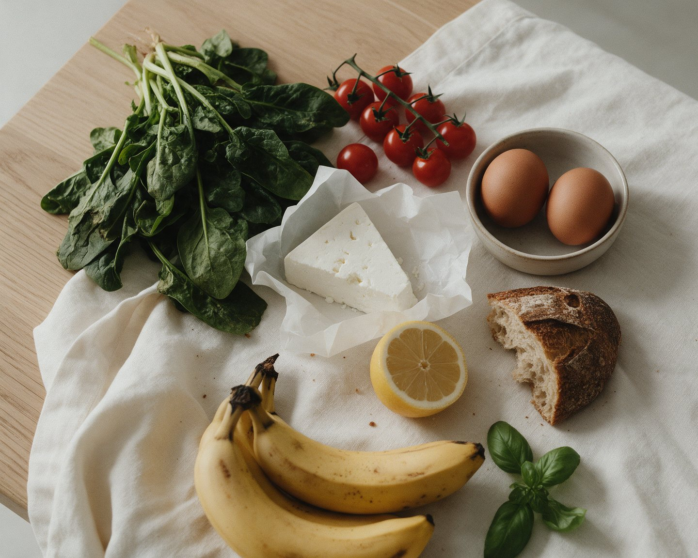
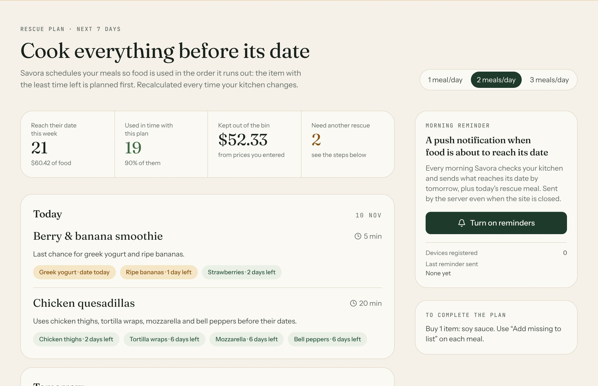
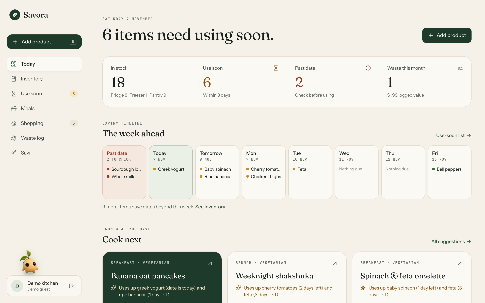
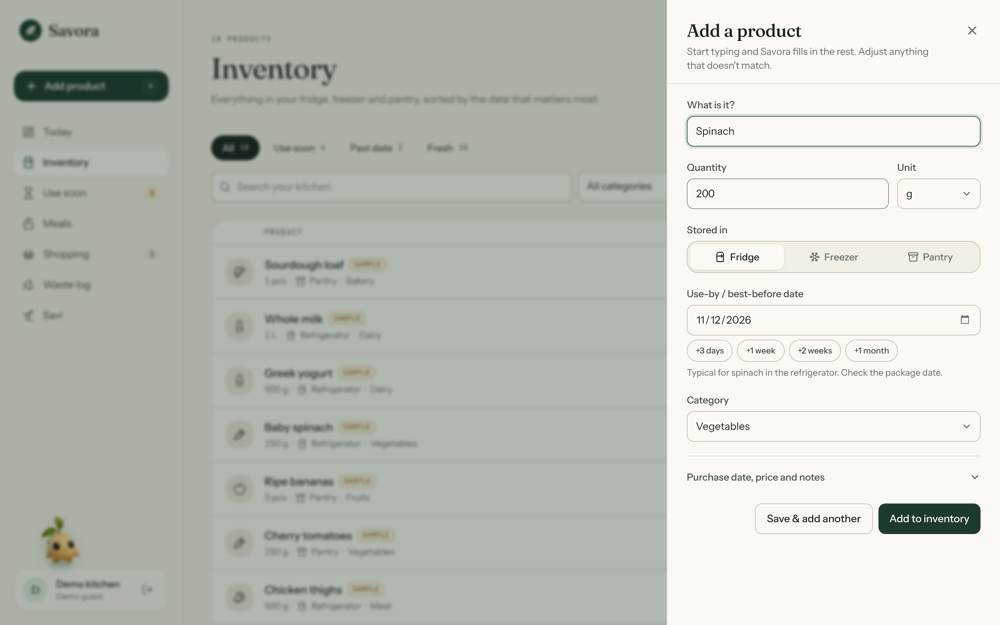
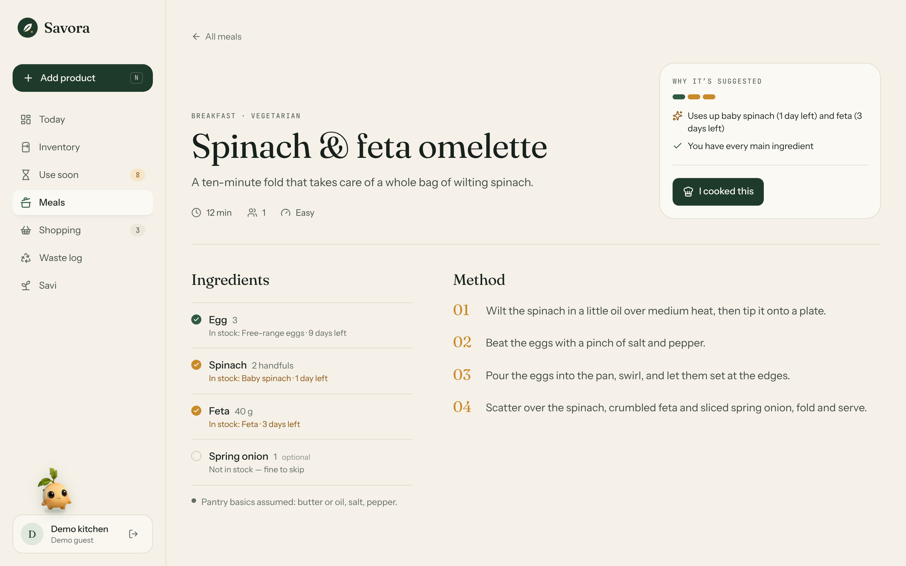
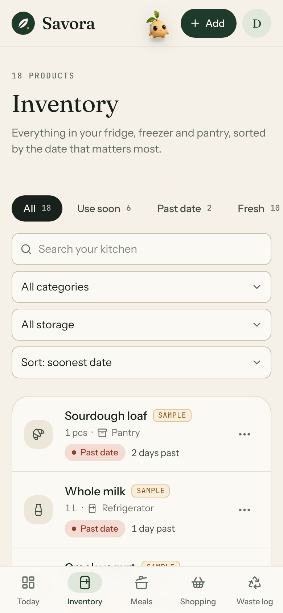

Household food management
An app that tracks the food a household already has, shows what needs using first, and suggests meals built around it.

The problem
Food at the back of the fridge or pantry is forgotten until it can't be used.
Nobody keeps every expiry date in their head, so the deadline passes unnoticed.
Without a clear view of home, people buy a second pack of something they already own.
Ingredients need a meal to go into. Without one, they wait until they're past using.
The result is money spent on food that ends up in the bin, and more household waste.
The scale
of food waste comes from households: 631 million tonnes, more than restaurants and shops combined.
UNEP, 2024
of food wasted at home per person each year. High- and middle-income countries differ by only 7 kg.
UNEP, 2024
of food thrown away at home could have been eaten: 4.4 of 6 million tonnes, about £1,000 a year for a family of four.
WRAP, UK, 2022
of EU food waste is linked to date marking: people confuse "use by" with "best before".
European Commission, 2018
Sources: UNEP, Food Waste Index Report 2024 · WRAP, Household Food and Drink Waste in the UK, 2025 · European Commission, Market study on date marking, 2018
Who it's for
Several people eat from one fridge. Nobody has the full picture of what's there or what's already open.
Two or more shoppers buy separately, so duplicates and forgotten items are common.
One big shop a week means fresh food has to be used in the right order, and that's easy to lose track of.
What they share: they want to spend less on food that goes unused, and they don't have time for a complicated tracking system.
The solution
Fridge, freezer and pantry in one list. Adding an item takes a few seconds because Savora fills in the details.
Clear expiry states, a seven-day timeline and meal ideas ranked by what expires first.
A shopping list that blocks duplicates and warns when something is already at home.
When food is thrown away anyway, the waste log records why, so households can see where waste comes from.
Key features
Type "spinach" and the category, storage, unit and a typical date are filled in. Search, filter and sort.
Fresh, Use soon (≤ 3 days) and Past date, with a seven-day timeline and a use-soon view.
24 recipes ranked by urgency and coverage, with matched and missing ingredients and a reason for each.
Adds missing recipe ingredients, warns about stock at home, and moves bought items into the inventory.
Quantity, reason, date and cost when known. Trends and categories come only from logged entries.
What makes Savora different
Meals scheduled by deadline: the item with the least time left is planned first. In the demo kitchen it uses 25 of the 27 items that would otherwise reach their date, and gives the other two a step: freeze or eat.
Every hour the database wakes the server (pg_cron), and at their chosen hour people get what reaches its date by tomorrow and what to cook today, even with the site closed. Every send is logged.
By voice or text: "milk 2 l, eggs 10, spinach". Savora splits it into products with amounts and dates, in English or Russian, plus your usual items in one tap.

Product
The headline, the four figures and the week-ahead timeline all come from the household's data. Meal ideas and notes below it are generated from the same inventory.
Screenshot of the working app with the demo kitchen.

Product

Quick add fills in details from a catalog of about 90 foods.

Each recipe shows what's in stock, what's missing, and why it was suggested.

Fully responsive, with bottom navigation on phones.
Technical architecture
Forms, sheets and filters. Filters live in the URL. Native <dialog> for accessible modals.
Session refresh, route guard
Reads through a data layer
Zod validation, typed results
Expiry, ranking, stats (unit-tested)
Row Level Security on every table. Atomic RPC functions. pg_cron + pg_net wake the server hourly for push reminders; the secret lives in Vault.
Only the publishable key is used. No service-role key exists in the app.
Enums, checks, date columns, a unique index that blocks duplicate list items.
Whole-day arithmetic in the viewer's time zone. No off-by-one errors.
91 unit tests and a 21-step Playwright end-to-end run.
Product value
One inventory for fridge, freezer and pantry, sorted by date, with a seven-day timeline on the dashboard.
Use-soon states and badges, a dedicated view, and notes such as "cook or freeze the chicken thighs".
The shopping list blocks repeat entries and shows what's already at home while you type.
Recipes ranked by what expires first, with missing ingredients added to the list in one tap.
A waste log with reasons, categories, trends and cost, calculated only from what was recorded.
Savora is a working product: a real database with row-level security, an explainable recommendation engine, and an interface designed for everyday use on any screen.